Laptop gaming mạnh nhất thế giới thời điểm hiện tại
ASUS ROG Strix SCAR 18 (2024) - Chiếc laptop gaming mạnh nhất của ASUS đang chiếm trọn nhiều trái tim game thủ khi sở hữu trong mình cấu hình khủng chiến vô tư mọi tựa game, màn to, máy đẹp chắc chắn sẽ khó game thủ nào có thể thoát khỏi được sự hấp dẫn của em nó.

Thiết kế ấn tượng đầy cảm hứng của ASUS ROG Strix SCAR 18
Như mình đã nói bên trên, ngoài cấu hình ra thì ngoại hình cũng như thiết kế ảnh hưởng kha khá đến trải nghiệm chiến game của chúng ta. ASUS Strix SCAR 18 2024 khoác lên mình bộ 'outfit' trông cực kì ấn tượng, đầu tiên là kích thước lớn với màn hình 18 inch trông em nó vô cùng 'lực' hầm hố, bên cạnh đó là các chi tiết vát cạnh trông rất hiện đại và đậm chất gaming.
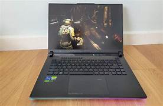Còn gì tuyệt vời hơn khi máy trang bị LED RGB tuyệt đẹp, vừa phá cách cũng như tăng độ ngầu cho game thủ. ROG Strix SCAR 18 được trang bị hai dải LED RGB ở trước và sau, mặt A của máy còn kết hợp với những đường khắc laser, logo ROG Slash phát sáng giúp gia tăng vẻ sang trọng, hiện đại và thu hút hơn với các game thủ.
Tất nhiên chúng ta có thể custom được bằng ứng dụng Armoury Crate. Mình thì rất yên màu xanh dương nên đã set profile RGB đồng bộ, bản lề sau thì set Rainbow phá cách thu hút mọi ánh nhìn. Phải nói, ngồi nhìn ROG Strix SCAR 18 thôi không cần chơi game cũng đủ thoả mãn rồi.
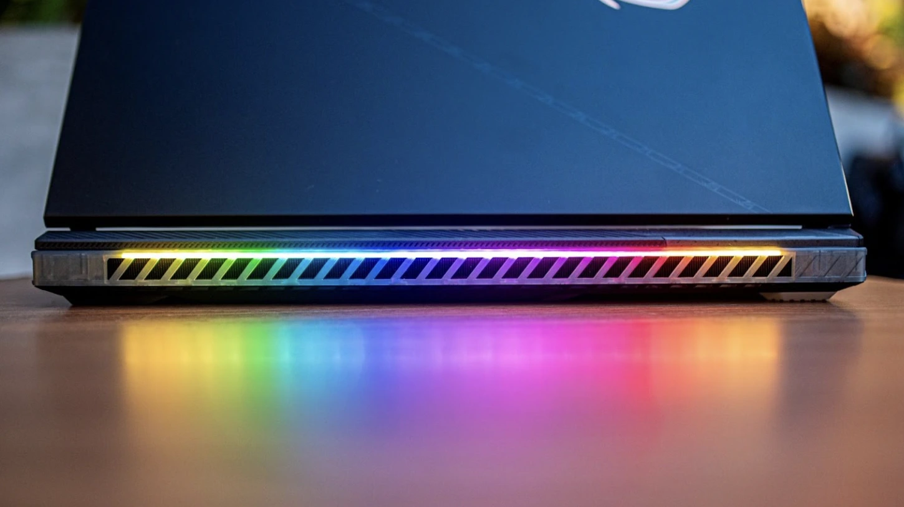 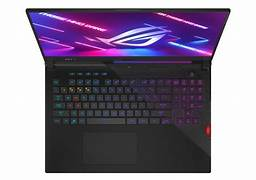Mình đánh giá cao độ hoàn thiện trên ROG Strix SCAR 18 2024, tất nhiên hơn 100 triệu thì phải làm cho ra gì và này nọ rồi. Thiết bị được hoàn thiện với mặt A là nhôm nên trông vô cùng cứng cáp, chắc chắn, ấn vào không có hiện tượng ọp ẹp. Do được làm dạng nhám nên khi sở vào rất mịn màng, kết hợp với độ lạnh của kim loại nên cảm giác khá là 'phê', không những thế còn hạn chế mồ hôi và dấu vân tay.
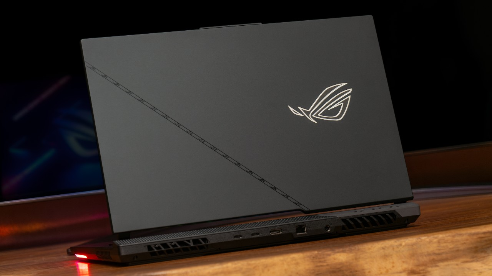Phần chiếu nghỉ là nơi chúng ta thường xuyên tiếp xúc, bên trên có những họa tiết đường nét đậm chất công nghệ trông khá là độc đáo. Bề mặt mặt B của em nó cũng được làm rất cứng cáp, cho cảm giác tì tay vào rất tự tin, cảm giác gõ phím rất êm, chắc chắn. Việc trang bị thêm LED cho từng phím càng làm cảm giác sử dụng thêm nổi bật, LED rất sáng, bắt mắt, bạn có thể tùy chỉnh màu sắc và hiệu ứng theo sở thích.
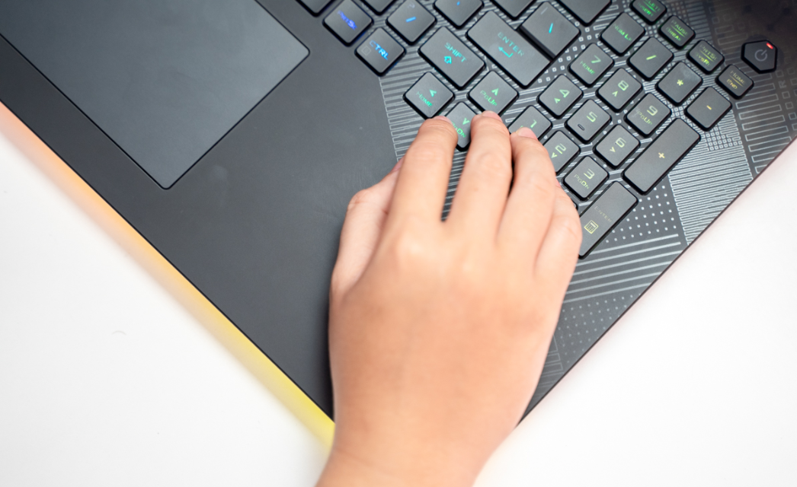Màn hình 10 điểm không có nhưng
Mình dám chắc luôn khi vào game, các ông game thủ sẽ có những lúc chill chill với những khoảnh khắc trong game như cưỡi ngựa ngắm hoàng hôn trong Red Dead Redemption 2, ánh sáng Neon hiện đại nhưng đượm buồn từ thành phố Night City trong tựa game Cyberpunk 2077, hay ngắm nhìn Waifu của mình trong Genshin Impact,...
Tất nhiên chúng ta cần phải có cho mình chiếc màn hình đẹp để 'chill' cho đã. ASUS ROG Strix SCAR được trang bị kích thước 18 inch cho không gian hiển thị rộng rãi thích hợp cho người dùng sử dụng đa nhiệm, đa tác vụ một cách bao quát, hay khi chơi game sẽ xem được nhiều chi tiết hơn, map rộng hơn chẳng hạn.
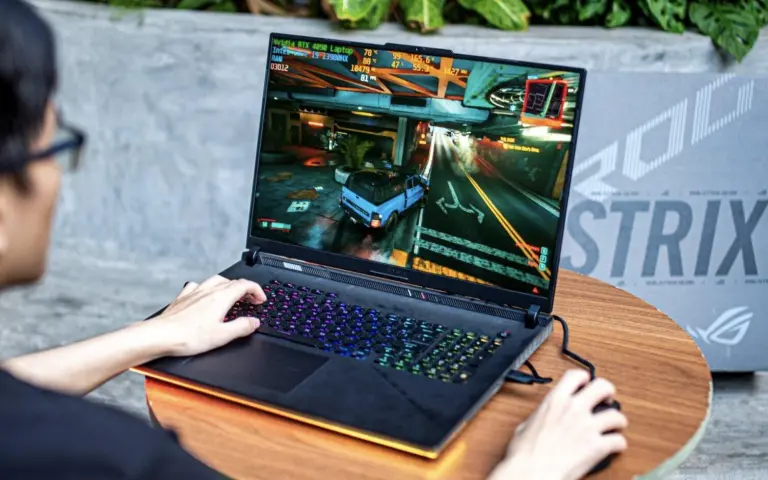Em nó được trang bị tấm nền MiniLED đạt chuẩn ROG Nebula HDR, độ phân giải 2K QHD+ (2,560 x 1,600, WQXGA), độ phủ màu 100% DCI-P3, độ sáng tối đa 1100 nits vô cùng thích hợp cho những bạn cần một chiếc màn hình có chất lượng tốt, màu sắc hiển thị đẹp mắt, chân thực xem phim hay chơi game đều ấn tượng hay các bạn designer chẳng hạn.
Đôi lúc mình hay xem phim trên laptop thì mình thấy màn hình của ROG Strix SCAR cho khả năng hiển thị rất thích mắt những bộ anime màu sắc sống động, các phim điện ảnh thêm ấn tượng với màu đen cực kỳ sâu, chi tiết nổi khối với độ phân giải 4K. Tất cả trải nghiệm hình ảnh trên chiếc laptop này là 10 điểm không có nhưng.
Chưa dừng lại ở đó, Strix SCAR 18 2024 được trang bị tần số quét 240Hz với độ trễ 3ms cho game thủ trải nghiệm những tựa game FPS yêu cầu cường độ cao như Counter-Strike 2 hay Valorant mượt mà, không xuất hiện bất kỳ hiện tượng delay gây khó chịu trong suốt trận đấu.
Bàn phím và touchpad tốt
Về bàn phím thì ASUS ROG Strix SCAR 18 2024 được trang bị layout bàn phím Full size, cộng thêm chiếu nghỉ dài và to nhờ thế mà trải nghiệm sử dụng thoải mái, full chức năng, nhờ trang bị kèm công nghệ N-key rollover giúp nhấn phím êm hơn, nhạy hơn, cảm giác bấm rất đã tay, các nút nhấn sâu. Hành trình phím khá là quen thuộc như trên các bộ bàn phím desktop nên mình không mất thời gian để làm quen.
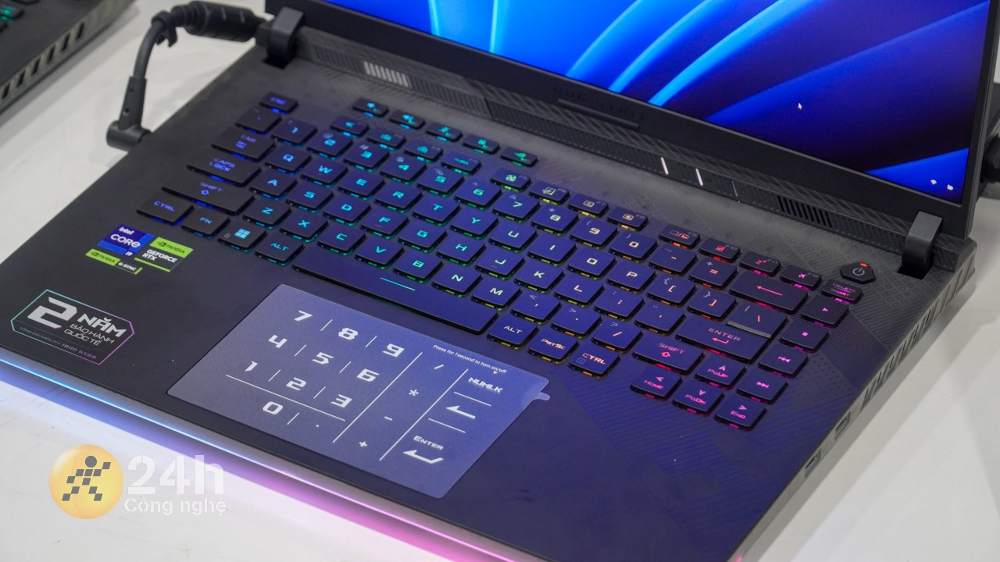Trackpad của máy được làm khá lớn, để người dùng có thể di chuột, sử dụng các thao tác chạm đa điểm vô cùng thoải mái và mượt mà. Nếu để phục vụ các công việc nhẹ nhàng thì bạn có thể không cần mang chuột theo.
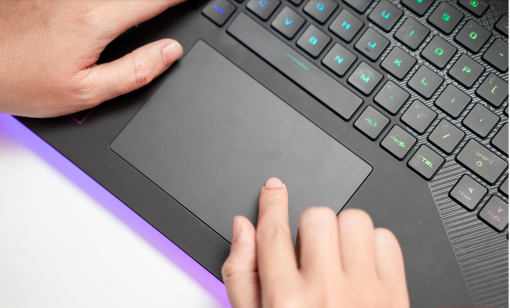Hiệu năng cân tất tần tật nhiều tựa game
Nhắc lại về hiệu năng, ASUS Strix SCAR 18 được trang bị RAM 64GB DDR5-4800 SO-DIMM, 2TB SSD, PCIe 4.0 NVMe M.2 SSD 1 khe trống, i9-13980HX thế hệ 13 với xung nhịp cơ bản 2.2 GHz (bộ nhớ đệm 36M, xung nhịp cao nhất lên đến 5.6 GHz, 24 nhân: 8 P-core và 16 E-cor và đặc biệt nhất là máy được trang bị card màn hình NVIDIA® GeForce RTX™ 4090 16GB GDDR6.)
Bên cạnh đó thiết bị được tích hợp công nghệ ROG Boost cho RTX 4090 lên mức 175W và CPU Core i9 14900HX 65W . Với tổng lượng điện năng 'ăn' đến 240W thì không ngoài dự đoán laptop này thoải mái xoã hết hiệu năng. Theo mình cảm nhận thì sẽ mạnh ngang ngửa i7 13700K trên PC & NVIDIA GeForce RTX™ 4090 với TGP 175W mạnh hơn 50% thế hệ cũ và mạnh ngang RTX 4070Ti trên PC.
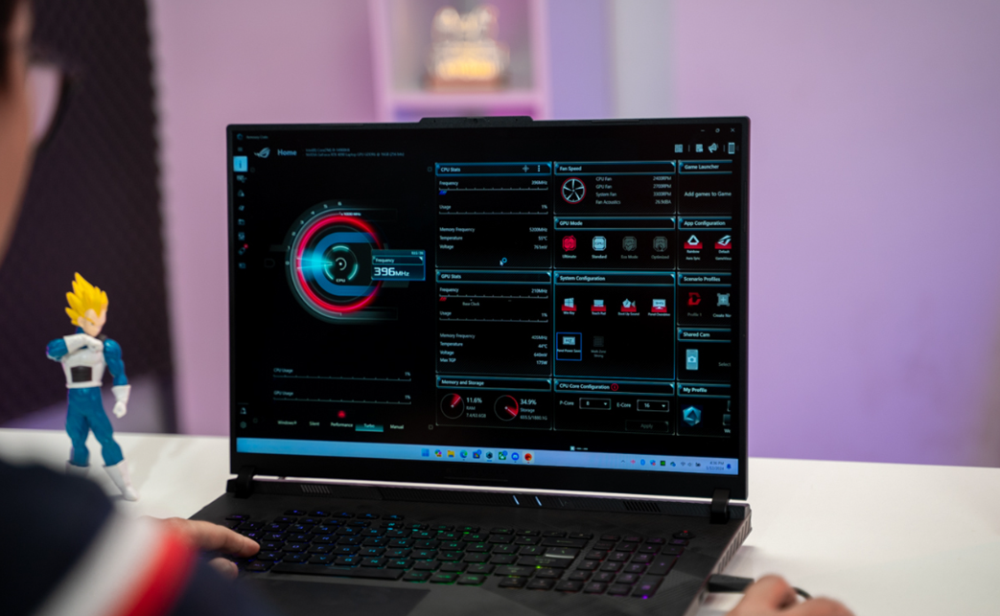Test phần mềm đo sức mạnh của laptop
Để test hiệu năng của máy thì mình dùng các phần mềm như Cinebench, 3DMark và đều cho ra những kết quả vô cùng ấn tượng. Các bạn có thể xem khảo hình ảnh bên dưới đây.
- Geekbench 6
- CrystalDiskInfo
- 3DMark
ASUS ROG Strix SCAR 18 2024 đạt 189,467 điểm hiệu năng, phải nói điểm số này cực kỳ mạnh mẽ. Thông số này khá sát với bản CPU Intel Core i7 13700K trên PC
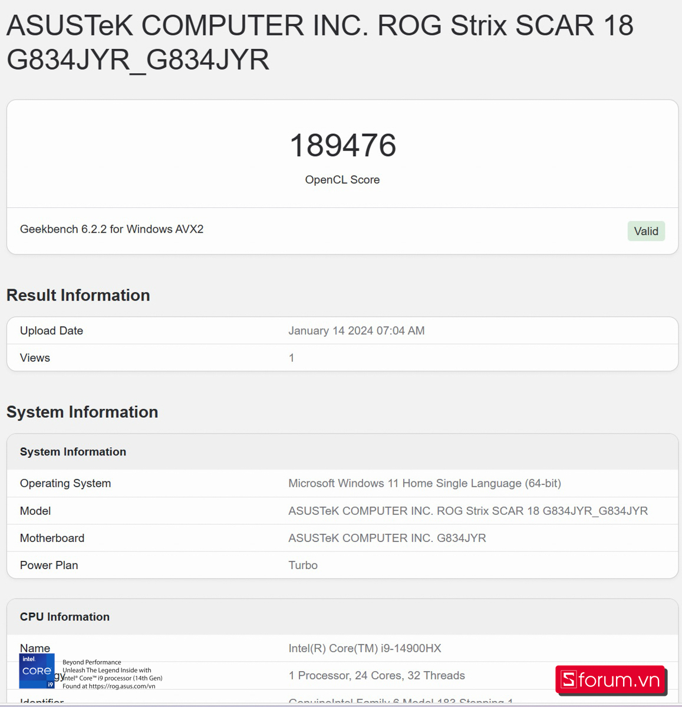ASUS ROG Strix SCAR 18 2024 được trang bị SSD PCIe 4.0 dung lượng 2TB, với tốc độ dường như max ping không có file nặng nào làm khó được chiếc laptop này cả.
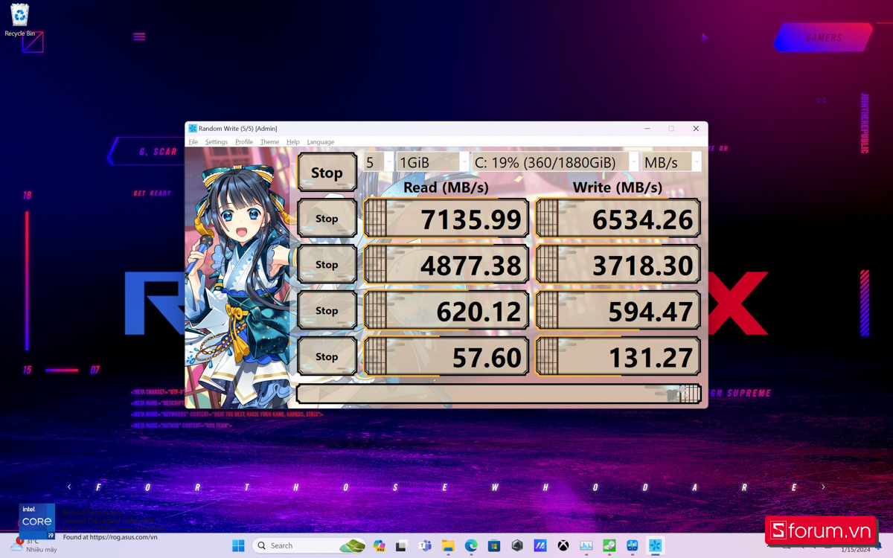ROG Strix SCAR 18 2024 cho ra điểm số khá tốt với bài kiểm tra áp lực GPU như Time Spy và Speedway Stress Test. Ở bài test với Time Spy, tổng điểm máy đạt được là 21,397 điểm Graphics và 16,760 điểm CPU.
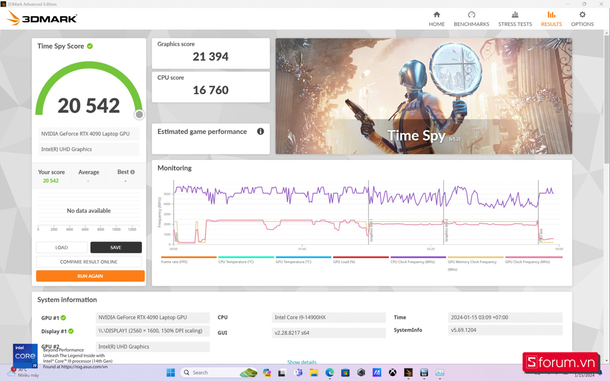Tiếp tục ở bài test Speed Way Stress Test thì đạt độ ổn định là 97.8% phải nói rất ấn tượng, hạn chế được tình trạng tuột đột ngột FPS khi chơi game.
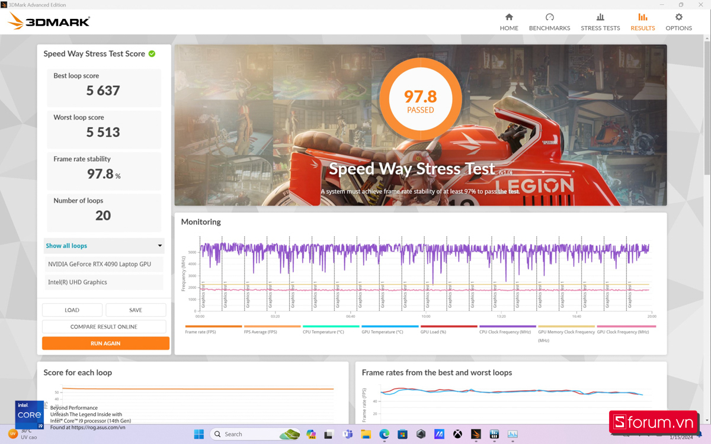Cấu hình mạnh là một điểm mạnh, do phải xử lý nhiều tác vụ nặng, hiệu năng của em nó được đẩy lên rất cao, quạt tản nhiệt phải hoạt động max công xuất nên sẽ rất ồn. Việc ồn khá là dễ hiểu trên những chiếc laptop cấu hình 'khủng' như thế này, Nếu đã quen thì các bạn cứ coi đây như tiếng quạt 113 triệu lofi.
Có thể nói với cấu hình trên mình tin chắc rằng không có tựa game nào trên thị trường có thể làm khó được ROG Strix SCAR 18 hay tha hồ làm những tác vụ nặng về đồ hoạ như edit video, chỉnh sửa hình ảnh, chạy CAD một cách mượt mà. Mình tin rằng cấu hình này có thể bật hết max setting mọi tựa game cho nhiều năm nữa vẫn ngon lành.
Thời lượng pin chơi game liên tục 3 tiếng
Về dung lượng pin thì ASUS Strix SCAR 18 được trang bị viên pin 4 cell 90WHrs hứa hẹn sẽ mang đến cho chúng ta thời gian sử dụng tốt. Mình thử sử dụng và chơi liên tục trong 3 tiếng đồng hồ sẽ cạn hết pin, còn nếu dùng trong các tác vụ văn phòng và lướt web thì laptop này có thể sống sót đến 5 tiếng.
Nhưng đối với một chiếc laptop gaming mạnh mẽ như em nó thì chúng ta nên vừa cắm sạc vừa sử dụng để có hiệu năng tốt nhất.
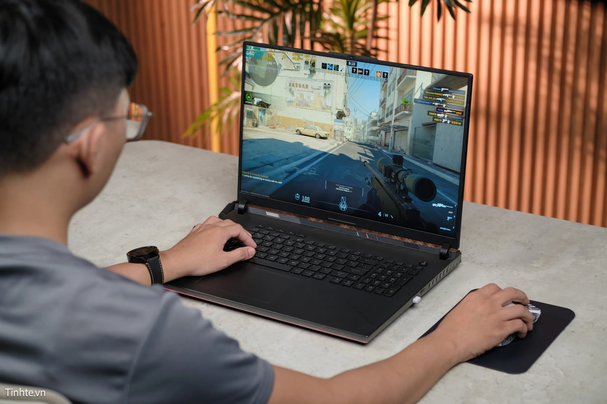Đa dạng cổng kết nối vô cùng tiện lợi
ASUS ROG Strix Scar 18 2024 được trang bị full đầy đủ các loại cổng cắm cần thiết, ASUS Strix SCAR 18 được trang bị 1 Jack cắm tai nghe 3.5mm, 1 cổng HDMI 2.1 FRL, 1 cổng 1x USB 3.2 thế hệ 2 Type-C hỗ trợ DisplayPort™/Power Delivery/G-SYNC,1 cổng LAN 2.5G, 1x cổng Thunderbolt™ 4 hỗ trợ DisplayPort™ / G-SYNC, cổng USB - C 3.2.
Nhờ thế mà người dùng chúng ta có thể cắm thêm nhiều phụ kiện bên ngoài như HUB USB, chuột bàn phím, hay màn hình lớn hơn chẳng hạn.
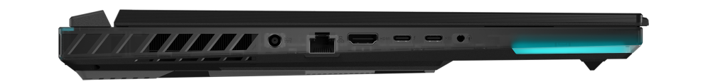Lời kết
Và đó là bài đánh giá ASUS Strix SCAR 18 2024 có thể nói, đây là chiếc laptop sở hữu cấu hình mạnh mẽ, ấn tượng, thiết kế đẹp mắt đậm chất gaming. Bên cạnh đó thì đây còn là mẫu laptop gaming cấu hình khủng nhất hiện nay, không ngán bất kỳ tựa game nào trên thị trường. Hiện tại sản phẩm chuẩn bị được mở bán tại CellphoneSvới mức giá 130,000,000đ cùng với những ưa đãi và phần quà hấp dẫn khác, các bạn đừng quên theo dõi để rước em hàng hot này nhé.
Ngày: 07/04/2025